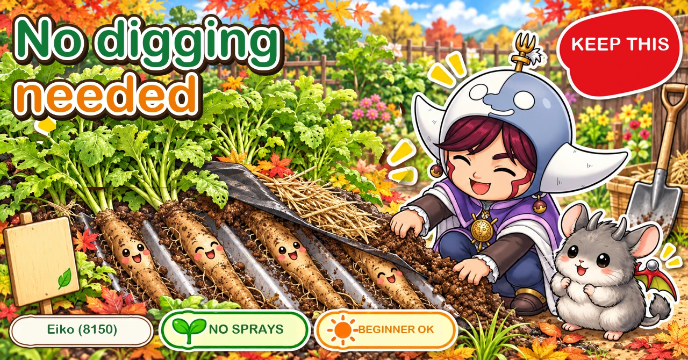
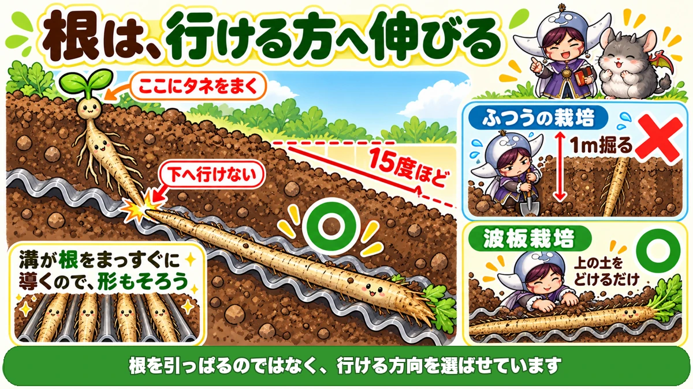
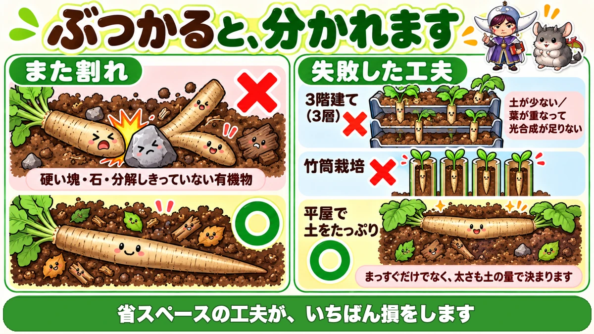
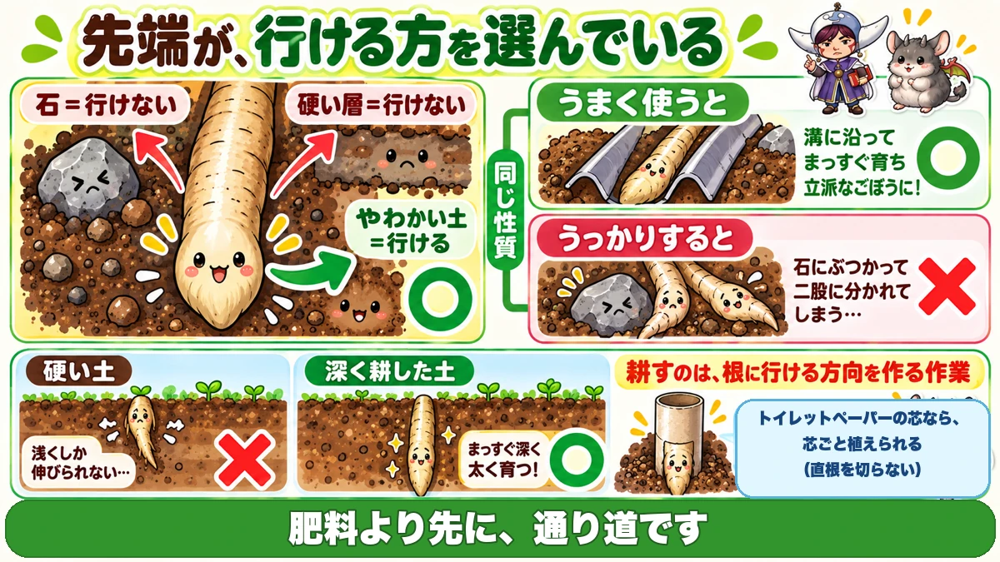

Burdock without digging 🌱 One sheet of corrugated board, laid at an angle

🌱 "The digging looks like too much work."
🌱 "I grew some and snapped it halfway out."
🌱 "What I pulled up had split into two or three."
Hello, I'm Eiko. Eight years of growing vegetables organically and without pesticides, and a teaching licence in science.
Burdock is the crop home gardeners avoid most, for an obvious reason: the root goes straight down, over a metre. It needs deeply worked soil, and harvesting it is an excavation.
There's a way round it.
The point, up front:
Lay a corrugated sheet at an angle, grow on top of it, and you harvest without digging 🌱
The basics
- Family: daisy family — related to lettuce and chrysanthemum greens
- Sow: spring, or early autumn
- Harvest: from a spring sowing, in autumn
Spacing is only about 10 cm — narrower than you'd think, because the root goes down rather than out.
And choose by length: the long-rooted types are what "burdock" normally means, reaching close to a metre. This article is about those.
How the sheet method works

What this diagram says （図解の文字）
- A root grows where it can
- Sow here ／ it can't go down ／ about 15 degrees ○
- The grooves guide the root straight, so the shapes are even
- Ordinary growing — dig a metre × ／ sheet growing — just take the soil off the top ○
- You aren't pulling the root; you're making a direction available
- Make a slope of about 15 degrees in the ground
- Lay corrugated sheets along it
- Mound soil on top of the sheets
- Sow along the top of the mound
The root changes course
A burdock root sets off straight down — and meets the sheet.
Since down is unavailable, it follows the groove of the sheet and travels diagonally downward.
So there's nothing to dig
The burdock grows lying on top of the sheet. At harvest, you take the soil off.
Digging a metre down disappears from the job entirely.
And the grooves straighten it
A second benefit: the grooves guide the root. It bends and divides less, and the roots come out a consistent shape.
Don't stack the layers

What this diagram says （図解の文字）
- It divides where it collides
- × forked root — hard clods, stones, undecomposed organic matter
- Ideas that failed — × three layers: too little soil; leaves overlap so photosynthesis is short
- × growing in bamboo tubes
- ○ single layer, with plenty of soil
The method takes up horizontal space, which makes "stack it two or three high and save room" an obvious thought. I had it too.
Three layers gives you thin burdock. Two reasons:
- less soil per layer
- the leaves overlap, so there isn't enough photosynthesis
So: single layer, with plenty of soil. It takes space, and you can mound properly. A classic case of the space-saving idea costing the most.
Soil, and forked roots
Mix plenty of compost into the soil you mound, rather than using plot soil as it is. The reason follows.
A fork is a collision mark
"I pulled it up and it was in two." The cause is simple: the root tip hit something hard —
- a hard clod
- a stone
- organic matter that hasn't finished breaking down
and divided at the point of collision.
So the answer is removing obstacles
Plenty of compost so the soil doesn't set hard. Pick out the stones. Don't use unfinished compost.
And protect it from heat
A mound of soil on a sheet is a thin layer: it dries and heats quickly.
- lay ground-cover fabric over it as a mulch
- put straw or dried grass on top of that
With summers as they are now, this makes a visible difference.
Raise plants in cardboard tubes
Burdock hates being moved. It has a single taproot, and cutting it causes exactly the forking described above. Normally you sow direct.
When you do want plants: stand toilet-roll tubes together and use them as pots.
They're paper, so they go into the ground as they are — not a single root cut.
Stand the tubes up, put newspaper underneath, fill with compost. Something you'd throw away becomes the tool — and burdock needs a deep container, so the long narrow shape is exactly right.
Sowing
- No pre-germinating — germination is good
- Four or five seeds per station
- Cover thinly
- Press with a finger so seed and soil are in contact
Thinly, because it's another light-requiring seed — same as shiso and chrysanthemum greens.
The science: roots take the path of least resistance 🔬

What this diagram says （図解の文字）
- The tip is choosing where it can go
- Stone = can't go ／ hard layer = can't go ／ soft soil = can go ○
- The same property — used well: it follows the groove and grows into a fine straight root ○
- Used carelessly: it hits a stone and forks
Worth asking: why does the root turn sideways instead of backing up or pushing the sheet aside?
The answer: a root grows in whichever direction offers least resistance.
The tip has a mechanism that senses contact with an obstacle, and it abandons the direction it can't go and switches to one it can.
So you're giving it a choice
The sheet method is simply this: create a situation where down isn't available. The root concludes "sideways, then".
You aren't pulling the root. You're letting it choose.
And forking is the same thing
Hits a stone → can't go → goes elsewhere.
But there's only one tip, so the branches to either side each thicken, and you get a fork.
The same property, used well, is the sheet method; used carelessly, it's a forked root.
And what deep digging is for
Which puts "cultivate deeply" in its proper light: it's the job of giving roots a direction they can go.
Make the path before you add the fertiliser. When root crops disappoint, this is usually the reason ☺️
To sum up
- ✅ Daisy family; sow in spring or early autumn; about 10 cm spacing
- ✅ The root goes straight down over a metre
- ✅ Lay corrugated sheet at about 15°, mound soil, sow along the top
- ✅ The root follows the groove sideways; you harvest by removing soil
- ✅ The grooves also keep it straight
- ✅ Don't stack layers, and don't use tubes — both run out of soil
- ✅ Forking is a collision with a stone or a hard clod
- ✅ Plenty of compost, stones removed, nothing unfinished
- ✅ Cover the mound against heat and drying
- ✅ Raise plants in cardboard tubes so no root is cut
- ✅ Light-requiring seed, so cover thinly and firm
- ✅ Roots take the path of least resistance — which both tricks work on
You don't have to do all of it. Find one sheet and lay it at a shallow angle. That's the hard part of burdock removed 🌱
Thank you for reading!